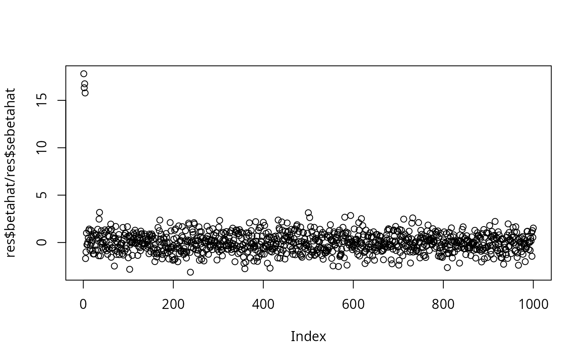

R/univariate_regression.R
univariate_regression.RdThis function performs the univariate linear
regression y ~ x separately for each column x of X. Each regression
is implemented using .lm.fit(). The estimated effect size
and stardard error for each variable are outputted.
univariate_regression( X, y, Z = NULL, center = TRUE, scale = FALSE, return_residuals = FALSE )
| X | n by p matrix of regressors. |
|---|---|
| y | n-vector of response variables. |
| Z | Optional n by k matrix of covariates to be included in all
regresions. If Z is not |
| center | If |
| scale | If |
| return_residuals | Whether or not to output the residuals if Z
is not |
A list with two vectors containing the least-squares
estimates of the coefficients (betahat) and their standard
errors (sebetahat). Optionally, and only when a matrix of
covariates Z is provided, a third vector residuals
containing the residuals is returned.
set.seed(1) n = 1000 p = 1000 beta = rep(0,p) beta[1:4] = 1 X = matrix(rnorm(n*p),nrow = n,ncol = p) X = scale(X,center = TRUE,scale = TRUE) y = drop(X %*% beta + rnorm(n)) res = univariate_regression(X,y) plot(res$betahat/res$sebetahat)